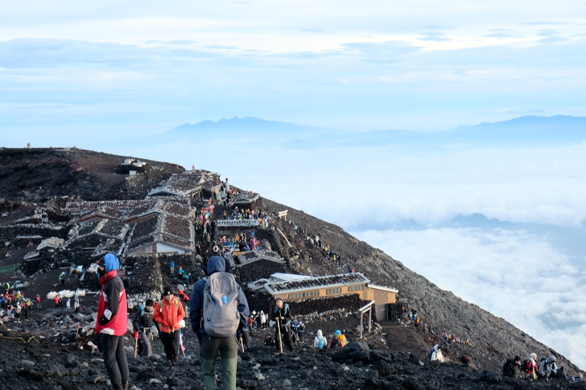
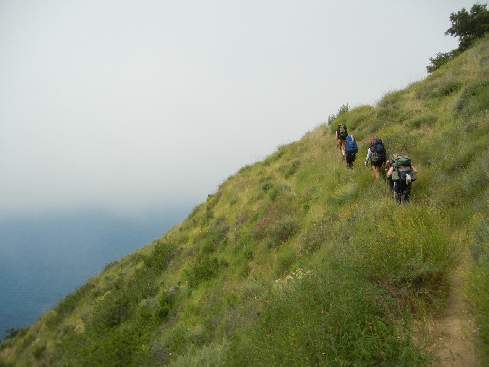

Trips
Japan Trips
-
Tokyo Running
Run through the streets of Tokyo to see the night lights and avoid the Summer Heat. Running shoes not included.
$80
-
Kyoto Cycling
Take yourself and your bike on a grand adventure through the sidestreets of Kyoto. See temples, bamboo forests, matcha cafes, and more!
$50
-
Mount Fuji Sunrise Hiking
Pull an all nighter and climb to the top of Mount Fuji! Warning, ther is some suprise rock scrambing required. Get Hot Chocolate at the top!
$200
-
Mount Mitake Hiking
Take the subway 1.5 hours outside of Central Tokyo, and see the wonders of Mount Mitake! Partake in a steep and treacherous hike that leads you to the sanctuary of the dog shrine at the top, and grab a bowl of Udon!
$50
-
Fujikawaguchiko Cycling
Take a very old rental bike around the lakes that surround Fuji! Experience the breathtaking views of Fuji and its distant foothills.
$80
-
Kumano Kodo Backpacking
Backpack one of two UNESCO world heritage trails. Hike for 45 miles in the mountains of the Wakayama prefecture, stopping at temples, waterfalls. Warning: Suprise Spiderwebs and Monkeys.
$300
United States Trips
-
Big Sur Backpacking
Take your first trip with the Field Studies Club up to the ridge of Big Sur. Meet lifelong friends. Plunge in Chilly Salmon Creek falls for some much needed rest at the end.
$27
-
Mammoth Lakes Skiing
Take a van with 4 friends to Mammoth Lakes in February. Sleep in the van in red rock canyon state park, ski during the day, and tell campfire stories at night. Warning: cold.
$120
-
Yosemite Hiking
Take your parents on an extremely hard hike through the ridges above Yosemite Valley. Traverse up the 4 Mile Trail, and descend the panorama trail.
$50
-
San Luis Obispo Cycling
Bike from Cal Poly to Avila Beach for a dip in the ocean. Warning: Extremely Fun.
$0
-
Montana de Oro Running
Run the Point Buchon trail in MDO. See Mountains, Bluffs, Cliffs, and Otters. Warning: closed on Tuesdays.
$5
-
Cal Poly Hiking
Hike to TV tower via Poly Canyon. Warning: Amazing views.
$0
Italy Trips

-
Lago di Brais Hiking
Hike around a beautiful Alpine lake in the dolomites. Stop by a mountain Hutte for authentic Italian food along the way.
$50
-
Alpa di Suisi Cycling
Bike around the largest alpine meadow in Europe, surrounded by wildflowers, mountain huttes, and beautiful alpine scenery.
$60
-
Alta Via 1 Hiking
Hike the whole 90 mile length of the Alta Via 1, a through hiking route in the Dolomites.
$500
-
Tres Cime Hiking
Hike to a view of the iconic viewpoint of Tres Cime in the Dolomites.
$20
-
Cortina de Impezo Skiing
Ski beautiful powder in stunning scenery. Take in the views and create some unforgettable Alpine Memories.
$800
-
Venice Walking Tour
Walk around one of the most Iconic cities in the world. View stunning architecture surrounded by canals of watercraft.
$70
Greece Trips

-
Posiedon's Temple Hiking
long-ish description of the product, maybe with ingredients or how it’s cooked
$0.00
-
Athens Cycling
Bike around the city, see historic sites in an extremely historically rich city.
$0.00
-
Aegina Pistachio Hiking
Hike on Aegina Island, the greek island known for its historic crop: Pistachios.
$0.00
-
Hydra Cliff Jumping
Visit one of the only islands in greece without cars. Meet the stray cats, and jump off stunning cliffs into crystal blue mediterraian waters.
$0.00
-
Athens Waterpolo Watching
Watch your brother's D1 college waterpolo team play against the greek national team. Warning: they lose.
$0.00
-
Athens Beach Lazing
Sit on the beach in Athens. Enjoy the beautiful Mediterannian Coastline. Warning: Extremely Relaxing.
$100
Searching for More?
More trips to be released on 9/1/26! Keep an eye out for Switzerland and Germany.